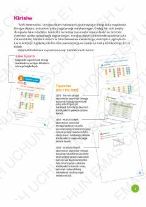

5M5-sinf o'quvchilari uchun mo'ljallangan qoraqalpoq tilidagi matematika mashq daftari.
Ushbu o'quv qo'llanma 5-sinf o'quvchilari uchun mo'ljallangan matematika mashq daftari bo'lib, qoraqalpoq tilida tuzilgan. Kitobda natural sonlar, sonlar ustida amallar, oddiy kasrlar, uchburchak yuzasi va geometrik jismlarning hajmi kabi mavzular bo'yicha amaliy topshiriqlar jamlangan.